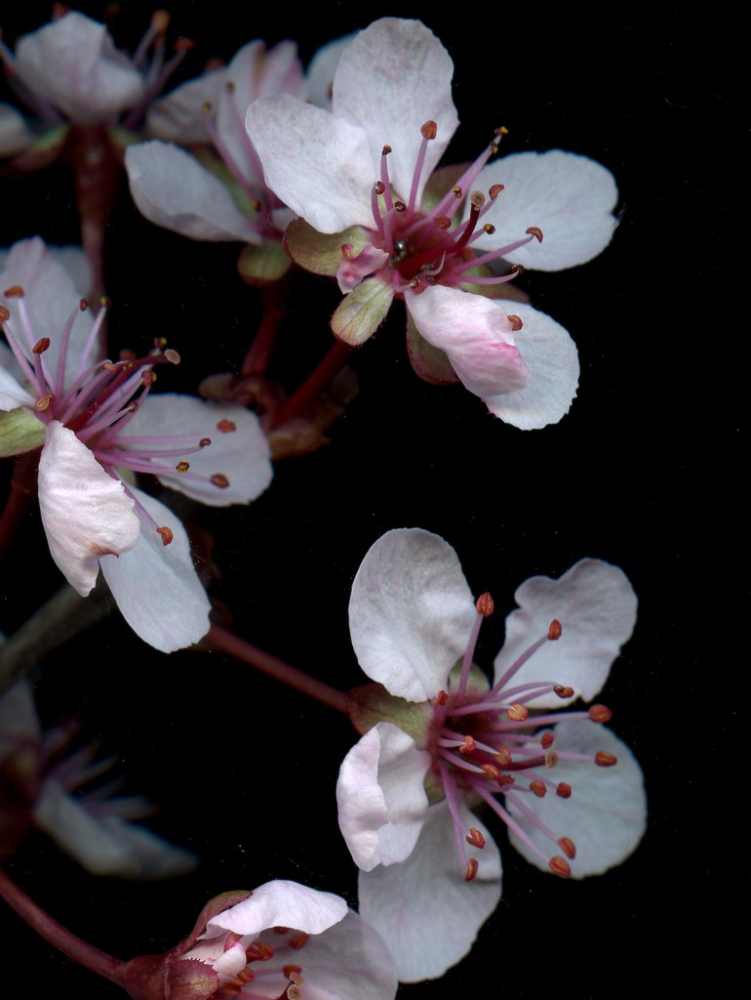

Cherry blossoms symbolize renewal, hope, and the fleeting nature of life, blooming for a short period each spring.
Celebrated in Japanese culture during hanami (cherry blossom viewing) season, these delicate flowers evoke feelings of wonder and admiration.
Known for their soft pink or white petals, cherry blossoms herald the arrival of warmer weather and are cherished worldwide for their ephemeral beauty.